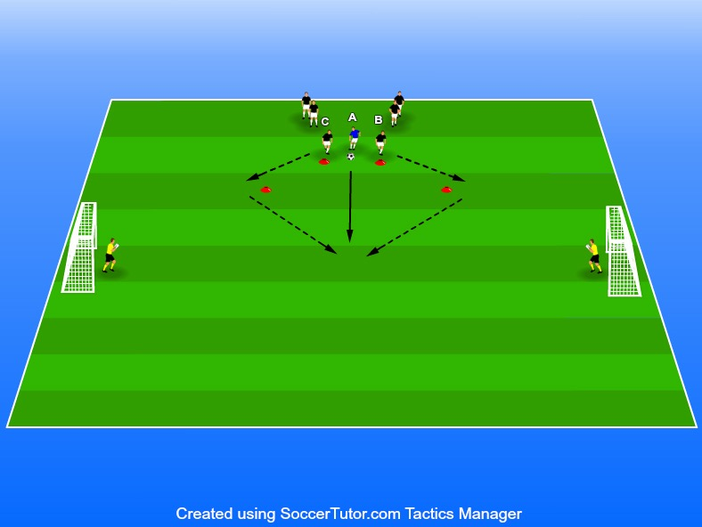

Snabbhet, närkampsspel & avslut
Ålder 8-9 år
8-12 spelare
2 målvakter
6-10 bollar 1. Spelarna står i två led bredvid en ledare som har alla bollarna.
4 konor När tränaren/spelare A på bilden rullar ut bollen ska de som står
2 mål främst i leden (B & C) först runda ”sin” kon och sen försöka ta sig
Spelarna först i ledet står i en viss ställning. Exempelvis kan dom sitta eller ligga ner, stå med ryggen emot. Som ledare se till att testa många olika startställningar. Allt för att stimulera motoriken i kroppen. Instruera gärna genom att visa fysiskt så att barnen förstår deras start ställning.
Leden kan tävla mot varandra genom att ledet exempelvis får två poäng om man gör mål samt ett poäng om man hinner först till bollen.
Jobba med två mål som ställs upp mittemot varandra. När en spelare får tag i bollen har denne då alltså två mål att göra mål på vilket uppmuntrar spelarna till att jobba mycket med vändningar (anfalla mot ett mål, vända och anfalla mot det andra).
Om det blir för svårt för försvararen kan man addera en ”permanent” försvarare (som man såklart byter efter ett tag) vars uppgift är att försöka vinna bollen av den som får tag på bollen. På så sätt skapas en 1 mot 2 situation.
Nivåindela så att man får möta någon jämnbra.